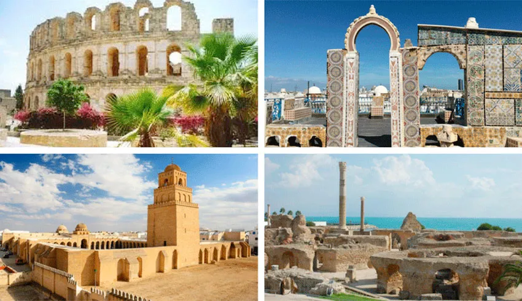
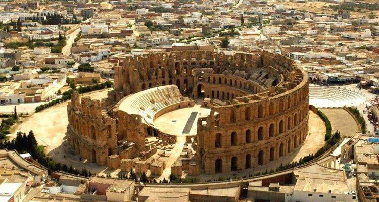
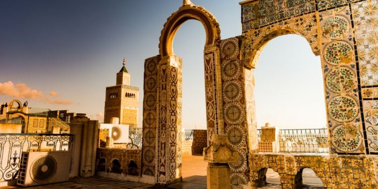

Culture en Tunisie

La Tunisie est riche en culture, avec une histoire ancienne et des influences diverses. La musique, la cuisine, l'architecture et les festivals font partie intégrante de son identité.
Explorez les villes historiques comme Tunis, Sousse et Kairouan pour découvrir les magnifiques médinas, les mosquées historiques et les marchés animés.


Explorez les villes historiques comme Tunis, Sousse et Kairouan pour découvrir les magnifiques médinas, les mosquées historiques et les marchés animés.
Le théâtre, la danse et les arts visuels sont également des aspects importants de la culture tunisienne, avec des artistes talentueux et des performances vibrantes.